B in B.A.B.E.L. · Platine bis zum Hauptrechner
Bits & Bolts
Im Play StoreBinär-Rätsel als Roguelite. Ein Roboter klettert Etage für Etage über die Platine hinauf zum Hauptrechner, dem Gedächtnis des PCs. Jedes Rätsel setzt alte Daten wieder zusammen und holt ein Stück Erinnerung zurück.
So spielt es sich
- Nullen und Einsen nach wenigen, klaren Regeln eintragen.
- 22 Roboter, jeder mit einer eigenen Regel, die das Rätsel verändert.
- Unterwegs Ereignisse wie Stromausfall oder Störsignal, oben der Hauptrechner als Ziel jedes Aufstiegs.
Wo es spielt
- Steckkarten
- Knopfzelle
- Chipsatz
- Arbeitsspeicher
- Hauptrechner
Bilder
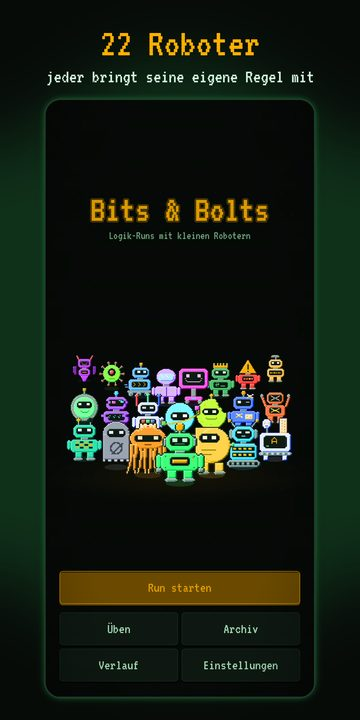
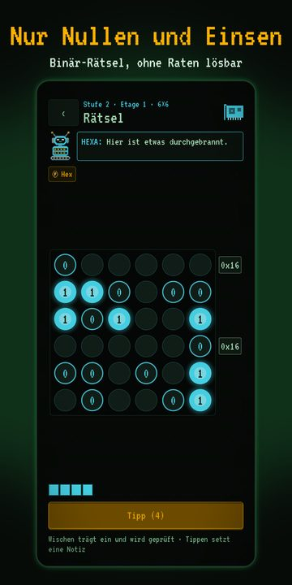
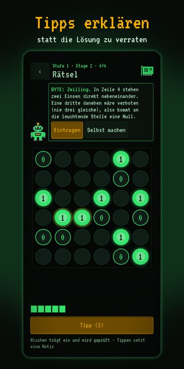
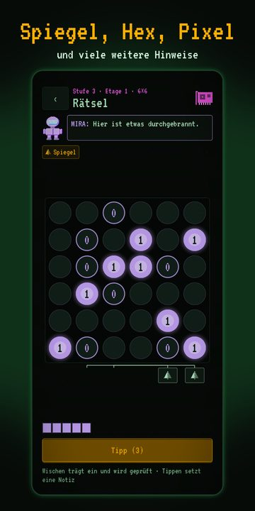
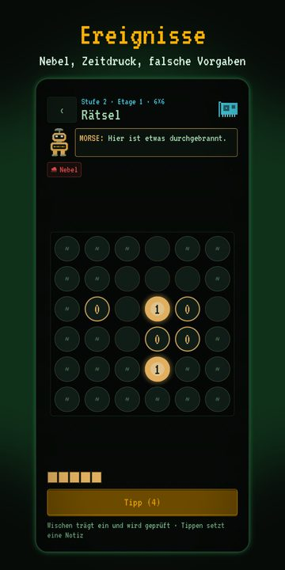
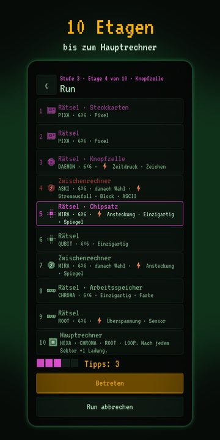
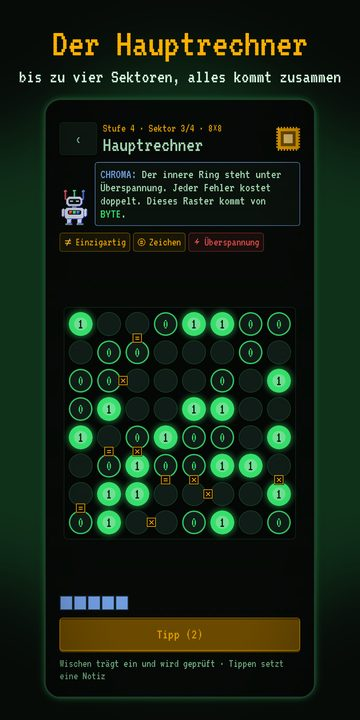
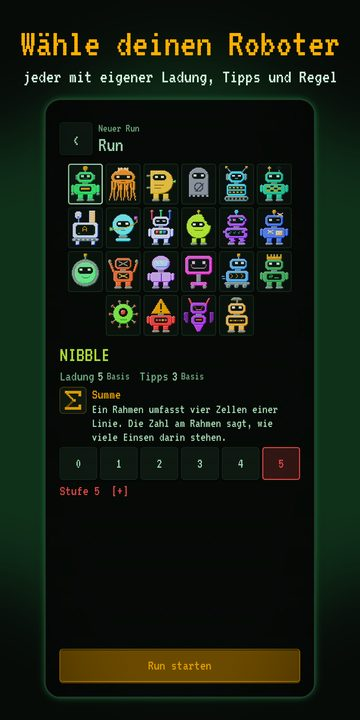
Die Regeln
Immer gilt:
- Jede Zelle bekommt eine 0 oder eine 1.
- Nie drei gleiche Ziffern direkt nebeneinander oder untereinander.
- Jede Zeile und jede Spalte hat gleich viele Nullen und Einsen.
Nur wenn ein Rätsel es anzeigt: Keine zwei Zeilen und keine zwei Spalten sind gleich (Einzigartig), und Zeichen zwischen Zellen: = heißt gleich, × heißt verschieden. Jedes Rätsel hat genau eine Lösung und lässt sich ohne Raten lösen.
Bedienung: nach oben wischen setzt eine 1, nach unten eine 0, Tippen setzt eine Notiz. Erst das Loslassen trägt ein, Zurückziehen bricht ab.
Ein Run
- Kurzschluss: Eine falsche Ziffer wird nicht eingetragen, sie kostet eine Ladung, und BYTE sagt, warum sie falsch war. Ist der Akku leer, ist der Run vorbei.
- Ladung und Tipps hängen am Roboter, BYTE hat 5 Ladungen und 3 Tipps. Tipps erklären den nächsten Schritt, statt die Lösung zu verraten.
- 10 Etagen: 7 Rätsel, 2 Zwischenrechner (Etage 4 und 7, schwerer, mit Ereignis, danach +2 Ladung oder +1 Tipp) und oben der Hauptrechner mit 1 bis 4 Sektoren.
- Gastroboter: Die ersten zwei Etagen kommen vom gewählten Roboter, danach mischen andere freigeschaltete Roboter mit ihren Regeln mit.
- Ein unterbrochener Run geht genau so weiter, mit derselben Karte und denselben Rätseln.
Der Weg nach oben
| Etage | Gegend | Wetter dort |
|---|---|---|
| 1–2 | Steckkarten | Wackelkontakt: Immer wieder erlischt eine deiner Ziffern. |
| 3–4 | Knopfzelle | Stromausfall: Nach einem Countdown erlöschen die Vorgaben. Wer vorher eine Ziffer daneben setzt, hält sie an. |
| 5–7 | Chipsatz | Überspannung: Ein Kurzschluss kostet 2 Ladungen statt 1. |
| 8–9 | Arbeitsspeicher | Störsignal: Immer wieder taucht eine falsche Notiz auf. |
| 10 | Hauptrechner | Alles kommt zusammen. Jeder Sektor bringt eine Erinnerung zurück. |
Dazu bringen vier Roboter ihre eigenen Ereignisse mit: Falsche Vorgabe (ERROR), Ansteckung (VIRUS), Zeitdruck (DAEMON) und Nebel (MORSE).
Sechs Stufen
Jeder Sieg öffnet die nächste Stufe. Die Stufe ändert nicht Ladung und Tipps, sie macht die Rätsel schwerer.
| Stufe | Was dazukommt |
|---|---|
| 0 | nur 6×6, leichtere Rätsel, 1 Regel je Rätsel, keine Ereignisse |
| 1 | bis 2 Regeln je Rätsel, 1 Ereignis bei den Rechnern |
| 2 | Rätsel ohne Erleichterung, Sensoren |
| 3 | Ereignisse und schwerere Rätsel ab Etage 4, bis 3 Regeln, Einzigartig, 2 Ereignisse im Hauptrechner |
| 4 | schwerere Rätsel ab Etage 5, 8×8 ab Etage 6, Hauptrechner in 8×8 |
| 5 | schwerere Rätsel, 8×8 ab Etage 4, Ereignisse ab Etage 3, bis 2 Ereignisse je Rätsel, bis 4 Regeln, stärkerer Hauptrechner |
Die 22 Roboter
Jeder Roboter bringt einen Hinweis, eine Zusatzregel, ein Ereignis oder eine Fähigkeit mit. Die ersten sechs kommen mit den Siegen, alle anderen schaltet frei, was man gespielt hat.
- BYTE Allrounder
Der Allrounder. 5 Ladungen, 3 Tipps, keine Besonderheiten.
Von Anfang an dabei  OKTA Rätselhinweis
OKTA RätselhinweisLiest Oktalzahlen an den Zeilen, startet aber mit 1 Ladung weniger.
Frei nach 1 Sieg GATE Zusatzregel
GATE ZusatzregelBringt in jedes Rätsel Zeichen zwischen Zellen: = heißt gleich, × heißt verschieden.
Frei nach 2 Siegen NULL Rätselhinweis
NULL RätselhinweisZeigt, wo in einer Linie die erste 0 steht, hat aber nur 2 Tipps.
Frei nach 3 Siegen HEXA Rätselhinweis
HEXA RätselhinweisLiest Hexzahlen an den Zeilen. 4 Tipps, aber 1 Ladung weniger.
Frei nach 4 Siegen- PARI Zusatzregel
Bringt in jedes Rätsel Blöcke mit gleich vielen Nullen und Einsen.
Frei nach 5 Siegen  ASKI Rätselhinweis
ASKI RätselhinweisLiest ASCII-Zeichen an den Zeilen. 5 Ladungen, aber nur 2 Tipps.
Frei nach 6 Siegen QUBIT Zusatzregel
QUBIT ZusatzregelVerschränkt Zellen: Von zwei Zellen mit gleichem Buchstaben ist genau eine 1.
Frei nach 15 Rätseln mit Sensoren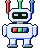
CHROMA RätselhinweisLiest Farbbalken an den Zeilen, hat aber nur 2 Tipps.
Frei nach 15 Rätseln mit Hex NIBBLE Zusatzregel
NIBBLE ZusatzregelZählt in Häppchen: Rahmen um vier Zellen sagen, wie viele Einsen darin stehen.
Frei nach 15 Rätseln mit Blöcken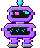
GLITCH RätselhinweisZeigt zwei Zahlen an einer Linie, nur eine stimmt. 4 Tipps, aber 1 Ladung weniger.
Frei nach 10 Rätseln mit Wackelkontakt oder Störsignal PATCH Fähigkeit
PATCH FähigkeitFlickt sich selbst: Der erste Kurzschluss in jedem Rätsel kostet nichts. Dafür 2 Ladungen weniger.
Frei nach 50 überstandenen Kurzschlüssen LOOP Zusatzregel
LOOP ZusatzregelSeine Raster haben keinen Rand: Nie drei gleiche gilt auch über den Rand hinweg.
Frei nach Siegen mit 6 verschiedenen Robotern XOR Rätselhinweis
XOR RätselhinweisZählt, an wie vielen Stellen sich zwei Nachbarlinien unterscheiden. Dafür 4 Tipps.
Frei nach 15 Rätseln mit Zeichen MIRA Rätselhinweis
MIRA RätselhinweisVerbindet Linien, die Spiegelbilder sind. 5 Ladungen, 3 Tipps.
Frei nach 10 Rätseln mit Einzigartig PIXA Rätselhinweis
PIXA RätselhinweisZeigt Pixelblöcke an Zeilen und Spalten. 5 Ladungen, 3 Tipps.
Frei nach 10 Rätseln mit Farbe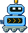
SHIFT RätselhinweisVerbindet Nachbarlinien, die um eine Stelle verschoben sind. 5 Ladungen, 3 Tipps.
Frei nach 10 Rätseln mit Spiegeln ROOT Zusatzregel
ROOT ZusatzregelSieht auch schräg: Nie drei gleiche gilt bei ihm auch auf den beiden langen Diagonalen. Dafür 1 Tipp mehr.
Frei nach 10 Rätseln in 8×8 VIRUS Ereignis
VIRUS EreignisSteckt an: Bei einem Kurzschluss erlischt auch eine Ziffer daneben. Dafür 1 Ladung mehr.
Frei nach 5 Rätseln mit Ansteckung ERROR Ereignis
ERROR EreignisBaut Fehler ein: Eine Vorgabe ist falsch. Dafür 1 Tipp mehr.
Frei nach 5 Rätseln mit falscher Vorgabe DAEMON Ereignis
DAEMON EreignisLäuft im Hintergrund: Wer zu lange nichts Richtiges einträgt, verliert Ladung. Dafür 1 Ladung mehr.
Frei nach 5 Rätseln mit Zeitdruck MORSE Ereignis
MORSE EreignisFunkt im Nebel: Klar zu sehen ist nur die Umgebung der letzten Zelle, richtige Ziffern lichten ihn. Dafür 1 Tipp mehr.
Frei nach 5 Rätseln im Nebel
Erinnerungen und Archiv
- 66 Erinnerungen: Der Hauptrechner ist das Gedächtnis des PCs. Jeder gelöste Sektor bringt eine Erinnerung des Roboters zurück, von dem er stammt, drei je Roboter.
- 24 Errungenschaften im Spiel, ohne Konto. Wer mag, meldet sie zusätzlich bei Google Play Games.
- Üben in 6×6 und 8×8, auch mit mehreren Robotern zugleich, und ein Verlauf aller Runs.
- Deutsch und Englisch, Töne und Musik im 8-Bit-Stil, alles abschaltbar. Keine Werbung, kein Konto, kein Internet nötig.